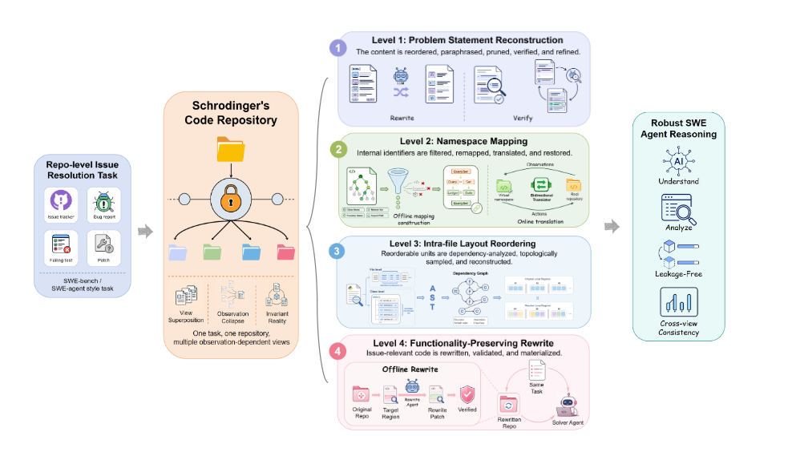

LLM Agents Evaluation Research paper

SchrodingerRepo stops treating a benchmark repository as a fixed artifact. It treats the test repository as an evaluation-time latent variable — instantiated fresh only when the agent enters the sandbox, and rewritten to keep the exact same executable behavior while stripping away the naming conventions, file layouts, and implementation patterns a model may have memorized during training.
Repository-level benchmarks like SWE-bench Verified have become the yardstick for coding agents. The trouble is they are built on popular open-source repositories — Django, Flask, sympy, and friends — the exact projects that appear over and over in pretraining data. When an agent “solves” an issue, we cannot easily tell whether it reasoned about the codebase or simply recalled it.
This is a measurement problem hiding inside a capability claim. If a leaderboard number reflects memorization of canonical repository cues rather than robust repository reasoning, then the score tells us more about training-set overlap than about how the agent would behave on a codebase it has never seen — which is, of course, the only kind that matters in practice.
The leakage you can’t patch away
The usual defenses against contamination are temporal: collect issues created after a model’s training cutoff, and assume anything newer is unseen. But this only controls for the problem being fresh — the surrounding repository is still the same familiar Django, with the same directory names, the same class hierarchy, the same idioms the model saw thousands of times.
So even a “held-out” issue lands the agent in a deeply familiar neighborhood. It knows where the settings module lives, what the ORM internals are called, how the test suite is organized. That familiarity is a form of leakage that no date filter removes — and it is exactly the crutch SchrodingerRepo is designed to kick out.
The idea: a repository that only exists when observed
The framing is playful but precise. In the classic thought experiment, the cat’s state is undetermined until you open the box. Here, the repository’s surface form is undetermined until the agent opens it. SchrodingerRepo instantiates a fresh representation at evaluation time and applies four behavior-preserving transformation levels, each erasing a different class of memorized cue:
- Problem statement reconstruction. Rewrite the issue description so the agent cannot pattern-match the exact wording it may have seen tied to a known fix.
- Namespace remapping. Rename modules, classes, functions, and variables so the familiar vocabulary of the project no longer signposts where to look.
- Intra-file layout reordering. Shuffle the order of definitions within files so “the function is usually near the top” heuristics stop paying off.
- Functionality-preserving code rewriting. Refactor implementations into equivalent but unfamiliar shapes, so the code runs identically while reading differently.
Crucially, all four are semantics-preserving: the tests that defined a correct fix still define a correct fix. Only the memorizable surface changes.
What the transformations reveal
The authors run popular LLMs on transformed versions of SWE-bench Verified (patch generation) and SWE-QA (repository question answering). The pattern is consistent and uncomfortable: strip the familiar cues, and performance drops while the agent works much harder for it.
The most telling signal is where the extra effort goes. Between 81.6% and 83.6% of the additional actions an agent takes on a transformed repository are exploration-oriented — searching, listing, reading files to figure out where things are. In other words, once the memorized map is taken away, agents spend most of their new budget just relocating themselves in a codebase that behaves exactly like one they “knew.”
The numbers
The degradation is not a rounding error, and it shows up on both the coding and the QA task:
| Setting | Metric | Effect of full transformation |
|---|---|---|
| SWE-bench Verified | Pass@1 | −6.0 to −14.4 points across models |
| SWE-QA | Answer quality | up to −4.64 points |
| Any transformed repo | Interaction cost | substantially higher (mostly exploration) |
The cleanest control is the temporal one. On instances held out after the training cutoff — where memorization should already be minimal — the transformations leave Pass@1 essentially unchanged while still raising interaction cost. That decouples the two explanations: the score drop on standard instances comes from removed cues, not from the tasks somehow becoming intrinsically harder.
Behavior-preserving transformations cut Pass@1 on SWE-bench Verified by 6.0–14.4 points and SWE-QA answer quality by up to 4.64 points, with 81.6–83.6% of the extra actions spent on exploration. On post-cutoff instances the drop vanishes — evidence that today’s coding agents lean, in part, on memorized repository-side cues.
Takeaway
SchrodingerRepo’s real contribution is a reframing of what a benchmark is. A static repository is a leaky measuring instrument, because a large enough model has already read the ruler. By making the repository a latent variable that is only instantiated — and freshly disguised — at evaluation time, the framework measures repository reasoning instead of repository recall, while holding the underlying task provably constant.
The uncomfortable implication for leaderboards is that some fraction of headline SWE-bench performance is localization the model got for free from training exposure. As coding agents move toward genuinely unfamiliar, proprietary codebases, dynamic instantiation looks less like a stress test and more like the honest default — the only way to know whether an agent can find its way around a repository it has never seen before.